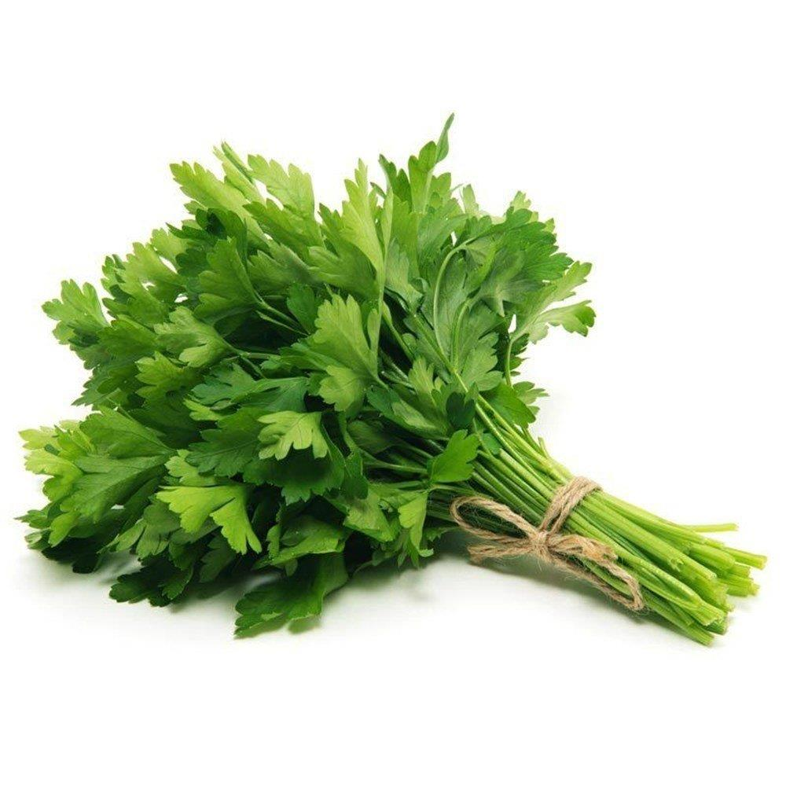
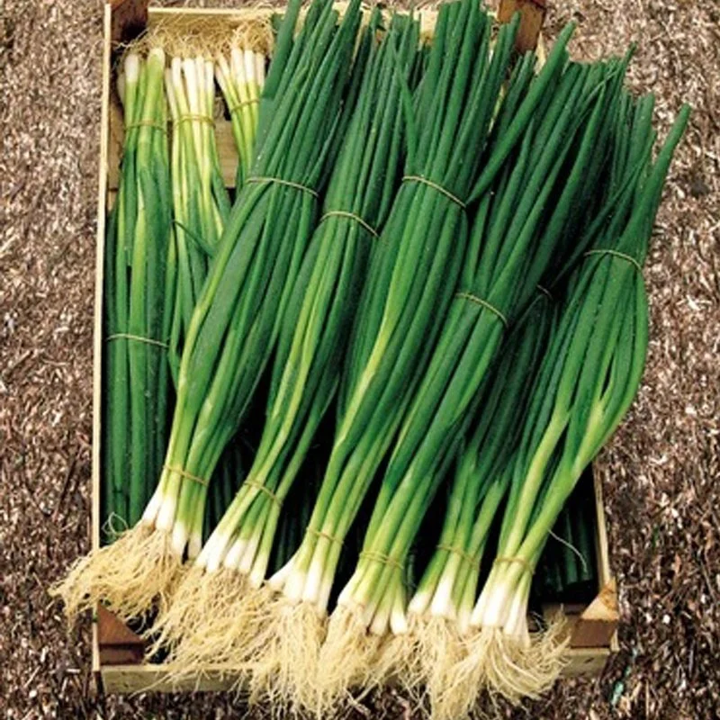
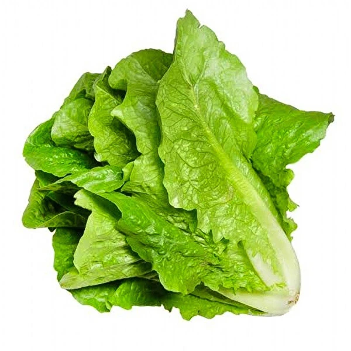

Hazırlanışı
Malzemeler:
2 su bardağı kısırlık (köftelik) bulgur
Su bardağı sıcak su (400 ml)

Yarım su bardağı sıvı yağ (100 ml)
Yarım demet maydonoz

5 dal taze soğan

5 yaprak marul

1 adet kuru soğan
2 diş sarımsak

1 yemek kaşığı domates salçası ve biber salçası
limon suyu

karabiber,kimyon, toz kırmızıbiber, kuru nane
tuz

Yapılışı:
- Kısır için öncelikle uygun bir kap içerisine kısırlık bulguru alalım.
- Üzerine sıcak su ekleyelim ve bulgurların şişmesi için 30 dakika kadar bekletelim.
- Bu sırada soğan ve sarımsağı küçük küçük doğrayalım.
- Ocağa aldığımız tavaya sıvı yağı ekleyelim.
- Üzerine doğradığımız soğan ve sarımsağı ekleyerek güzelce kavuralım.
- Domates ve biber salçasını da ilave ederek birkaç dakika kavurmaya devam edelim.
- Nane, karabiber, kırmızı biber, kimyon ve tuzu ekleyerek karıştıralım ve ocaktan alalım.
- Şişen bulgurları kaşıkla hafifçe açalım.
- Daha sonra üzerine kavurduğumuz salçalı soğanı ilave ederek karıştıralım.
- Doğranmış marul, taze soğan ve maydanozu ekleyerek bolca limon sıkalım.
- Tüm malzemeyi karıştıralım.
Kısırımız servise hazır. Afiyet olsun!